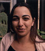
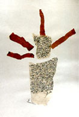
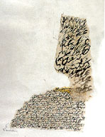
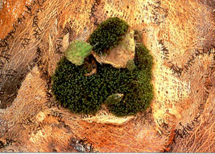
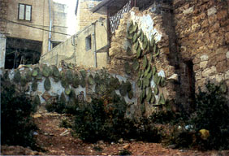
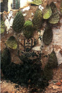
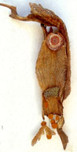
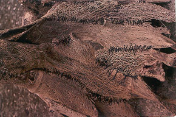
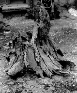
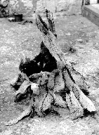

Rana Bishara in Tarsheeha
by Samia A. Halaby, 1999
In April of 1999, I interviewed artist Rana Bishara in her home-town of Tarsheeha. Tarsheehar is located in the northern mountains of Palestine near the Lebanese border now under Israeli governance. In discussion, she assigned the beginning of her artistic life to age fifteen when she began to devote substantial time to painting. From childhood, she remembers watching her father at work in his jewelry shop forming shapes from gold and silver. Rana and attributes to him her richly visual impressions.
Tarsheeha is known for its arts and crafts. Many Arab town and city centers are ancient and to this day some are still full of craftsmen working in small shops and in full view of passers-by. Rana remembers her grandfather excelling in crochet. Tarsheeha is also known for wood working, bee-keeping, cottage crafts, as well as for its love of music, and the many musical sons it produced.
"Composition," 1996, ink & henna on paper
In 1991 Rana Bishara began her formal studies at Haifa University. She concentrated on fine arts with a minor in women's studies. She graduated in 1994 having earned a Bachelor of Art Degree. She lived in Haifa for six year. While in Haifa she produced profusely as is always her tendency. After Haifa she went to Switzerland having received a scholarship from Pro-Helvetia. Her six months there were a time of rewarding creativity as well as a time of recovery from the pressures of life under Israeli rule.
In 1996 she returned to Tarsheeha and was given use of her grandmothers old home as a studio. It is a beautiful old house in traditional Arab style built in 1938. Rana has five rooms and they are all full of her work as is the garden outside. Walking through the house is a bit like walking on the artist's palette. Things are profusely scattered and there are work projects and materials on every table top, chair, rug, floor space, and flower bed.
"My Mona Lisa," 1996, ink and henna on paper
The urge to make art is extremely strong in Rana who wisely courts her creativity in a variety of ways. She divides her attention between conceptual and intuitive expression. This creates a division in her work which allows the parts to enrich each other. Her conceptual works have a formal beauty which grows out of her intuitive work. In her intuitive work she explores with abandon feeling the excitement of throwing concepts to the wind. At times she begins from an object in reality which catches her attention. She draws and redraws it until she arrives at the essence of why it caught her eye. The process is a search for the general in a particular object. She still has in her studio a small branch which she found in Switzerland.
Rana also creates constructions with a social and or a political message. Like many artists who are members of oppressed nations, she uses the symbolist forms of Post Modernism and fills them with her own national content. One of her major series utilizes cactus. She explained its importance saying: "Cactus became a symbol of the 'Nakbe' (Palestinian tragedy of 1948) because it has tenacious roots and grows wherever you throw it; and that is what Palestinians do out of necessity. In Arabic cactus is called 'saber' which is also the word for patience. And since Palestinians use patience a lot as a weapon of hope for the future. Cactus has become a symbol of resistance. It is also a symbol of the heroism and tenacity of villagers who were violently evicted from Palestine by Israelis in 1948. Since traditionally cactus is a protective fence, when in 1948 Israelis demolished and bulldozed our villages, the cactus would grow again and etch out the boundaries of family homes and plots revealing Israeli crime in graphic outline.
 Untitled, 1999, cactus basket & moss
Rana uses cactus as a visual language. "Cactus is like a language for me and I seldom use it as subject for drawing but as the thing itself in three dimensions." In Haifa, she found a fragment of an old home - a wall still standing after Israeli destruction. Rana hung it with cactus leaves and between them she hung fragments of Arabic tiles often found at the site of destroyed homes. She called the work "Scream of the Valley - Wadi Al-Nisnas." She explained that Nisnas is the animal like a cat that is long in shape. And wadi means valley. The Nisnas is extinct in this valley now. Thus use of the phrase in this context is intended to describe how Arabs feel in Israel - deeply threatened. As time went by the cactus leaves sprouted and the meaning of that is not lost on either of us.
 "Scream of the Valley -- Wadi Al-Nisnas," 1997, installation
She also uses cactus as a medium for conceptual three-dimensional work. The most recent was exhibited in Al-Quds (Jerusalem) at Al-Wasiti Art Center. The work was a green cactus leaf the lower half of which was dipped in chocolate. Rana titled it "Sweetie." It is a description in symbolic form of our experience. Think of all that is beautiful in Palestine and you cannot enjoy it because of the continuing occupation and severe oppression applied by Israel. In discussion she said that It combines something harmful and something sweet as she cited an old Arabic saying: "Ya binet inte bitrushe al mote succar." (You sprinkle sugar on death).
 Untitled, 1994, cactus and ceramic
When dry and fallen to the ground, the cactus leaf quickly becomes a network of veins. It remains tough. She creates constructions with them. Often she sews them together to create illusions of other recognizable things.
 Untitled, 1999, work in progress
For example, in the garden of her studio she is building an olive tree from dry cactus leaves. It is an ambitious project. Looking at it and trying to explain where it is going she said: "I am born after the 'Nakbeh' but I get it all from my father and mother and my experiences from the �Day of the Land� and my own continuing experience. I am breathing politics and oppression here and it confirms what my parents tell me. We experience exile right in our own land. During their 50th anniversary, Israelis invited Arab artists to participate in an exhibition at their museum. They begged me to join but I refused. I am not part of it I am the other side of the 'Nakbe.' I am trying to build an olive tree from dry cactus. After I build it as an olive tree I want to hang green cactus leaves on it like a new kind of fruit. I like not always to be political in my work and sometimes to be non-political and free. They (the Israelis) think that 'saber' (cactus) symbolizes them but I think they are stupid because they found the plant here and did not have anything to do with it in their history. Even falafel and fava they take and make them out to be as though theirs." The two pictures below are two views of this work in progress. Only the lowest part of the main trunk of the olive tree is complete.
  "Olive Tree with Cactus Fruit," 1999, a work in progress
"I do a lot of installation. But always, when I find a new subject I feel that I am at the beginning of a road. I use henna because it is feminine and feminist. I was searching for a medium and found Henna wonderful and it has two colors -- green and red." Her discussion regarding materials and their importance to the expression and the content of her work is an idea that is current among many Palestinian artists.
Rana is a talented young artist on the beginning of a long road. We wish her the most fruitful of journeys.
Born in 1971, Rana Bishara has had several solo shows and has exhibited internationally including in Sweden, Germany, Morocco, New York, and Poland.
My Grandmother... The Town of Beisan... The Arab City of Jerusalem... Sabah Told Me... My Home in Yafa... Khader Told Me... Olives of Palestine... Our Students... A Taxi Ride in Bethlehem... Written by Doctor Fathihe Saudi... Hasan Told Me... A Visit to Kafr Qasem... The artist of Kafr Qasem... The Massacre at Kafr Qasem (not yet ready)
Rana Bishara, painter, intallation artist... Tayseer Barakat, painter... Sari Khouri, painter... Abdel Tamam, painter... Vera Tamari, ceramist and painter... Adnan Yahya, painter and graphic artists...